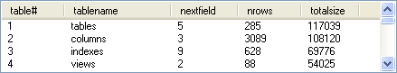

(query = false, columns = false, display = false,
timed_destroy = false, reverse = false, no_prompts = false,
font = "", size = "", realtime_scrolling = true, handle_leftclick = false,
style = 0, exstyle = 0, doubleclick_edit = false, column_widths = false,
allowDrag = false, stretch_to_fill = false, usercolumns = false,
tips = false, menu = false, headers = false)
Creates a Windows "listview" Common Control.
Handles large_icons, small_icons, list, details, arrange, and line_up commands. Creates a right button menu for these commands.
Xstretch and Ystretch default to 1.
If a query argument is specified, then the list will be in report format and will contain all of the columns from the query. The items are generated from the query records using the LVS_OWNERDATA style.
For example:
ListViewControl(query: 'tables')
Or since query is the first parameter in the list:
ListViewControl('tables')
Would display something like:
A columns argument can be passed to listview to specify which columns from the query will be displayed in the list. This should only be used when the query argument is specified.
If the display argument is true, then all values will be displayed in the list as strings.
timed_destroy can be specified in order to destroy the listview window after a certain amount of time has elapsed. The value being passed should be the number of seconds without any user input before destroying the window.
If the reverse argument is true then the records from the query will appear in reverse order in the list.
If no_prompts is true then the field names will be used for the column headings instead of the default PromptOrHeading. For example:
ListViewControl('tables', no_prompts:)
If realtime_scrolling is passed as false, then the client area won't be redrawn until the thumb is released on a drag operation. This will make the scrolling faster.
Passing handle_leftclick with a false value will prevent the listview from sending the ListView_MouseClick message. Some applications may define the ListView_MouseClick method to handle the mouse click, if this argument is passed as false, then the applications won't get the notification.
The window style can be passed by specifying the style in the style parameter. For example:
ListViewControl('stdlib', style: LVS.SORTDESCENDING)
The window extended style can be passed by specifying the style in the exstyle parameter. For example:
ListViewControl('stdlib', exstyle: LVS_EX.GRIDLINES)
The doubleclick_edit argument should only be specified when the LVS_EDITLABELS style is in use. This allows the label to be edited by double-clicking it. For example:
ListViewControl('stdlib', style: LVS.EDITLABELS, doubleclick_edit:)
If the column_widths argument is false, then the column widths are obtained from their Field format; otherwise they are set to the provided values.
If allowDrag is true, users will be able to drag items with the mouse. Send's 'ItemMoved' on mouse up. Note: This does not work with the LVS_REPORT style.
stretch_to_fill can be used to specify a column whose width will be adjusted so the columns fit the window (if possible). If stretch_to_fill is true the last column will be adjusted.
If usercolumns is not false, it specifies a title which is used to save and load the column widths set by the user (using UserColumns).
If tips is true then ListView_Tip(row, col) is sent when the mouse hovers over the list. If tips is "auto" then a tooltip with the complete text of the item will be displayed whenever the mouse hovers over an item that does not fit in its column.
menu can be used to pass in a right click context menu. Two options can be used that are implemented by ListView - Copy and Inspect. e.g. menu: #(Copy, Inspect)
headers is used with columns (along with query). It is used to supply the header text for the columns instead of the default PromptOrHeading. For example:
columns: #(abc_num), headers: #('ABC Number')